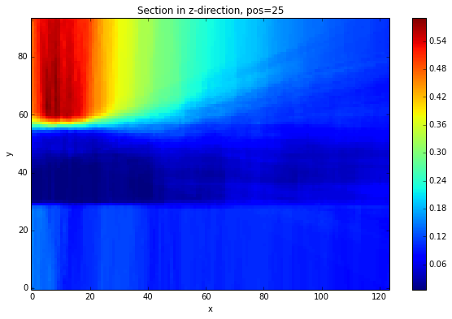
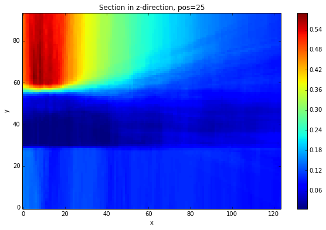

import sys, os
import matplotlib.pyplot as plt
import pynoddy.history
import pynoddy.output
import copy
import pickle
# os.chdir(r"/Users/Florian/Documents/10_Geomodels/Noddy/GBasin/GBasin")
os.chdir(r"/Users/flow/Documents/02_work/10_Geomodels/06_Noddy/")
reload(pynoddy.history)
reload(pynoddy.events)
PH = pynoddy.history.NoddyHistory("GBasin_Ve1_working.his")
STRATIGRAPHY
FOLD
UNCONFORMITY
FAULT
FAULT
UNCONFORMITY
FAULT
FAULT
UNCONFORMITY
FAULT
FOLD
UNCONFORMITY
PH.get_origin()
(0.0, 0.0, 1500.0)
PH.get_extent()
(26630.0, 19291.0, 1500.0)
PH.events
{1: <pynoddy.events.Stratigraphy instance at 0x1124ee488>,
2: <pynoddy.events.Fold instance at 0x1124eecf8>,
3: <pynoddy.events.Unconformity instance at 0x1124eedd0>,
4: <pynoddy.events.Fault instance at 0x1124ee9e0>,
5: <pynoddy.events.Fault instance at 0x1124ee200>,
6: <pynoddy.events.Unconformity instance at 0x1124ee518>,
7: <pynoddy.events.Fault instance at 0x1124ee7a0>,
8: <pynoddy.events.Fault instance at 0x1124ee998>,
9: <pynoddy.events.Unconformity instance at 0x1124eeb90>,
10: <pynoddy.events.Fault instance at 0x112525758>,
11: <pynoddy.events.Fold instance at 0x112525680>,
12: <pynoddy.events.Unconformity instance at 0x1125257e8>}
PH.events[12].properties
{'Dip': 0.0, 'Dip Direction': 90.0, 'X': 0.0, 'Y': 0.0, 'Z': 1350.0}
reload(pynoddy)
his = 'simple_folding.his'
PH.write_history(his)
out = 'simple_folding_out'
pynoddy.compute_model(his, out)
print os.getcwd()
/Users/flow/Documents/02_work/10_Geomodels/06_Noddy
reload(pynoddy.output)
PO = pynoddy.output.NoddyOutput(out)
PO.plot_section('y', position=-1, ve = 10.)

PO.export_to_vtk(vtk_filename = "GBasin")
Chaning aspects of Fold and Unconformity events¶
As a quick test of the fold and unconformity events, here some simple examples:
- changing amplitude and position of the folding
- adjust position of the unconformity
PH.events[8].properties['Amplitude'] = 200.
PH.change_cube_size(50)
PH.update_all_event_properties()
PH.events[2].properties
{'Amplitude': 1000.0,
'Cylindricity': 0.0,
'Dip': 75.0,
'Dip Direction': 180.0,
'Pitch': 0.0,
'Single Fold': 'FALSE',
'Type': 'Sine',
'Wavelength': 11594.0,
'X': 0.0,
'Y': -477.0,
'Z': 158.0}
PH.events[2].update_properties()
his = 'simple_folding_2.his'
PH.write_history(his)
out2 = 'simple_folding_out_2'
pynoddy.compute_model(his, out2)
reload(pynoddy.output)
PO2 = pynoddy.output.NoddyOutput(out2)
PO2.plot_section('y', position=0)

PO2.export_to_vtk(vtk_filename = "Gipps_changed_hres")
Set-up of uncertainty study¶
Ok, it’s the time now to become uncertain! Let’s start with some simple uncertainties:
- Fault dip: normal distribution with mu = original dip value stdev = 0.1 * mu
- Fold amplitude: normal distribution with mu = original value and stdev = 0.1 * mu
- Fold position: normal distribution for X positoin with mu = 0 value and stdev = 2000.
Update: suggestions by Mark (in email):
Faults (all events) Perturb dip and strike +- 10 degrees (a range of 20 degrees)
Folds (all events) Perturb dip and strike +- 10 degrees Wavelength +- 1000 (range of 2000) Amplitude +-300
Unconformities Just adjust the Z value by +- 500... but nothing else. That should cause enough trouble on its own.
Topology Maybe just change the folding events +- 1 position from the original. This will mean folding will either post-date faulting, or pre-date an unconformity. Hmm... this is fun!
# Let's start with a clean model:
PH = pynoddy.history.NoddyHistory("GBasin.his")
# set cube size to create higher resolution outputs - once it works...
PH.change_cube_size(100)
noddy_his = 'tmp'
noddy_out = 'tmp_out'
PH.write_history(noddy_his)
pynoddy.compute_model(noddy_his, noddy_out)
PO = pynoddy.NoddyOutput(noddy_out)
STRATIGRAPHY
FOLD
FAULT
FAULT
UNCONFORMITY
UNCONFORMITY
UNCONFORMITY
FOLD
FAULT
FAULT
FAULT
UNCONFORMITY
As Mark wants to have relative changes, let’s just create a simple function to do the trick and avoid a lot of writing later:
def disturb_percent(event, prop, percent=5):
"""Disturb the property of an evetn by a given percentage (default=10), assuming a normal distribution"""
ori_val = event.properties[prop]
new_val = np.random.randn() * percent/100. * ori_val + ori_val
event.properties[prop] = new_val
def disturb_value(event, prop, stdev):
"""Disturb the property of an evetn by a given stdev, assuming a normal distribution"""
ori_val = event.properties[prop]
new_val = np.random.randn() * stdev * ori_val + ori_val
event.properties[prop] = new_val
Now we create a function to disturb the model once. Note: the object has to be copied before the disturbance step, otherwise properties are continuously changed, leading to a random walk instead of a standard samping (and therefore to a lot more disturbance):
def disturb(PH_local):
for event in PH_local.events.values():
# check instances and roll the dice
if isinstance(event,pynoddy.events.Fault):
disturb_percent(event, 'Dip')
disturb_percent(event, 'Dip Direction')
if isinstance(event,pynoddy.events.Fold):
disturb_percent(event, 'Dip')
disturb_percent(event, 'Dip Direction')
disturb_value(event, 'Wavelength', 500)
disturb_value(event, 'Amplitude', 100)
if isinstance(event,pynoddy.events.Unconformity):
disturb_value(event, 'Z', 0)
PH_tmp = copy.deepcopy(PH)
disturb(PH_tmp)
PH_tmp.events[2].properties['Dip']
74.82774156182523
Setting up the entire uncertainty sampling step is now straight-forward:
- Copy original model
- Disturb like crazy
- Save to temporary file and compute
- Load output block model and store in array
# define number of sampling steps:
n = 500
all_blocks = np.ndarray((n, PO.nx, PO.ny, PO.nz), dtype="int")
for i in range(n):
PH_tmp = copy.deepcopy(PH)
disturb(PH_tmp)
PH_tmp.write_history(noddy_his)
pynoddy.compute_model(noddy_his, noddy_out)
PO_tmp = pynoddy.NoddyOutput(noddy_out)
all_blocks[i,:,:,:] = PO_tmp.block
For later use (and probably combination of results of multiple runs), save results to file:
pickle.dump(all_blocks, open("all_blocks_500.pkl", 'w'))
The questions is now, of course, how to analyse and visualise the results. As a first step, we simply generate indicator functions and determine the id probabilities.
For a first simple visalisation, we create a “dummy” NoddyOutput file with the same properties as the original output file and assign the resulting grid to the block property. We can then use the standard plot_section and export_to_vtk commands:
# define id to be analysed:
unit_id = 11
ind_func = (all_blocks == unit_id)
np.shape(ind_func)
id_prob = np.sum(ind_func, axis=0) / float(n)
# create dummy NoddyOutput and assign values as block
NO_dummy = copy.deepcopy(PO_tmp)
NO_dummy.block = id_prob
NO_dummy.export_to_vtk(vtk_filename = 'prob_unit_id_%d' % unit_id)
NO_dummy.plot_section('x')
NO_dummy.plot_section('y')
NO_dummy.plot_section('z')
 

len(np.unique(PO.block))
9